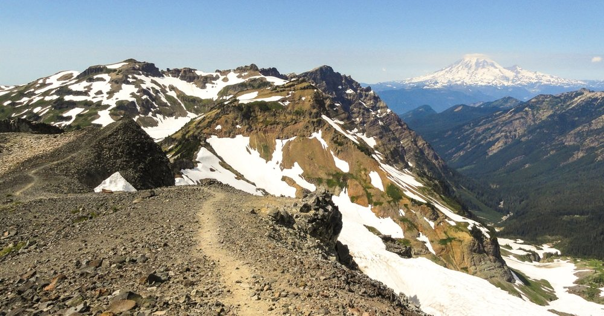
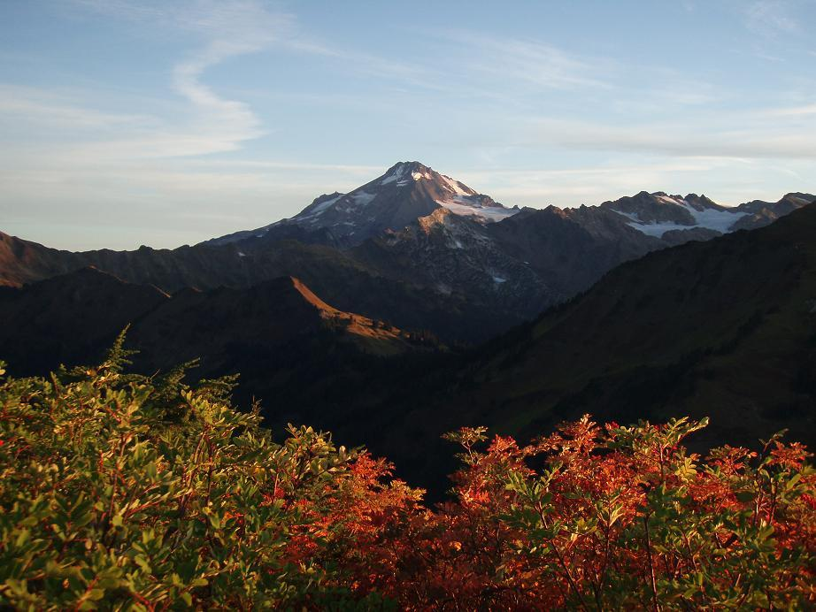
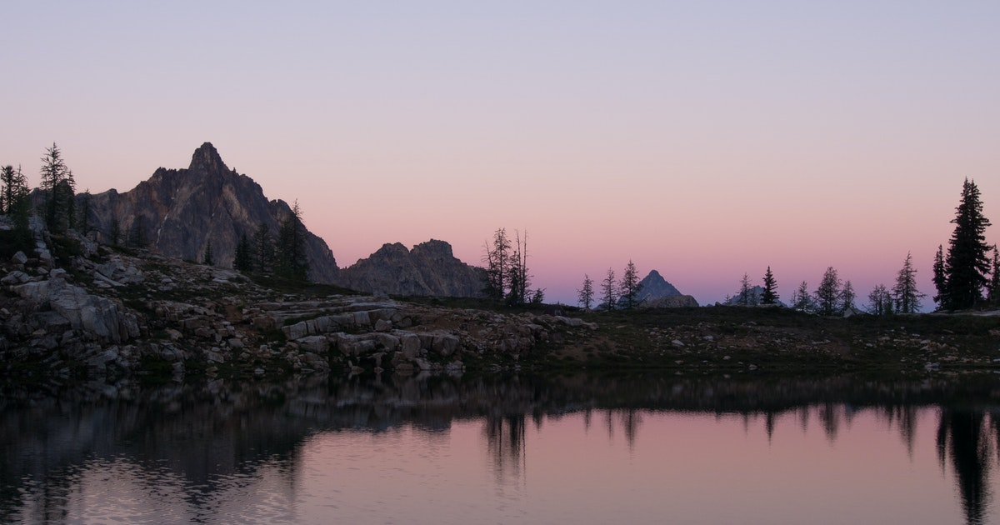

<!DOCTYPE html>
<html lang="en-US"></html>
<head>
  <link href="css/styles2.css" rel="stylesheet" type="text/css">
  <title>BEST SECTIONS OF THE PCT</title>
</head>
<body>
  <h1>Best Sections of the Washington section of the PCT</h1>
  <h2>A few gorgeous areas that I've really enjoyed over the years</h2>

  
  <h3>Goat Rocks and Knife Edge</h3>
  <p>One of the scariest sections of the PCT. The trail follows a warm colored spur along two 200ft cliffs. Get to see every peak in the area, Adams, Rainier, Hood, and Helens.</p>

  
  <h3>Kodak Peak and Meandering Meadows</h3>
  <p>A lovely climb to one of the best view points in the Pacific Northwest. Another bonus is an incredible look at the typically unseen Glacier Peak, the third highest mountain in Washington State</p>

  
  <h3>Snowy Lakes and Cut Throat Pass</h3>
  <p>One of the few lakes in the Alpine Wilderness that is worth swimming in. Though small and relatively unassuming, these lakes are valuable for their gorgeous meadows. They also happen to fall along a pass, so the sunsets are to die for.</p>
  
</body>
</html>
